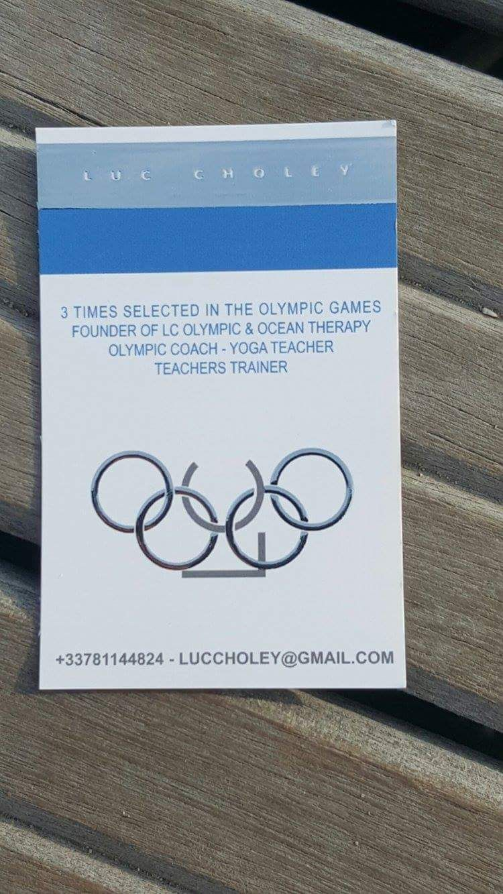
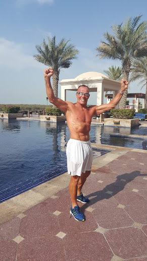
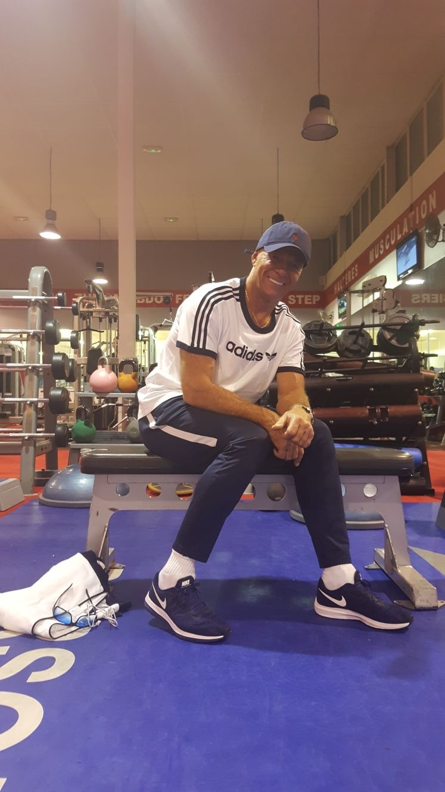
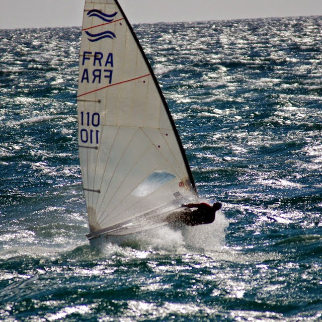

Accueil
Video
Youtube
Training
Galerie Photo
Contact
LUC CHOLEY
ABOUT LUC CHOLEY
Luc represented France in the Olympics on three occasions.
He is the founder of the ground-breaking
LCO fitness programme.
International Olympic athletes in the following disciplines
have followed
his methods achieving unparalleled success.
Track and
Field
,
Rowing
,
Nordic Skiing
,
Boxing,Swimming
and
Sailing
.
Luc
is also a
fitness consultant to 2 US Football teams.
As the fitness manager
at the prestigious Hotel Du Cap Eden Roc, Luc
has trained
movie
and
rock stars.
As well as
masterminding
these fitness programmes he has managed
the recovery
of
people from accidents
,
nervous breakdowns addictions
and
debilitating diseases like Parkinson’s disease
.
Luc
was
born in Corsica
and
grew up in French Martinique.
He cites some
extraordinary experiences
in his life which has
resulted in him finding
"
inner-keys"
which
helped him to survive and succeed
.



Previous
Next
Aged 13
,
Luc
was
subject to a violent trauma which resulted in his inability to speak properly.
He discovered
the Kundalini Yoga teachings aged 29
.
Practising
and
learning from Yogi Bhajan
(
The Master of Kundalini Yoga
),
Luc’s
normal speech returned.
Whilst skiing
aged 22 Luc
was
involved in a
serious accident
.
The helicopter
found him in a crevasse after 23 hours
.
The prognosis was that he would
spend the rest of his life in wheelchair
.
Luc
used his inner "
dream key
" also with a team of fabulous
surgeons
and
Osteopaths’
(
and the help of God!
) to
recover
,
whilst in a wheelchair Luc
would
visit the track and begin to activate his
"
inner dream key"
12 months later,
Luc
was able to
run again.
He
took part in a workshop for the French Olympic Team of Track and Field 400 meter team
.
Weeks later Luc returned to sailing winning the
European Cup
and
represented France twice at the Olympics.
These experiences
(Luc thanks God every day for them), gave him the determination to win, push him to open himself to help people to wake up,
follow their dreams to transform their body health and destiny to their own sacred choices.
ABOUT OLYMPIC FITNESS
Cardio Training
designed to
make the body powerful fast and slim.
The aim of the class is to optimise performance of any level of athlete.
Soulful House and Disco music is used.
We focus on strengthening the abs
,
butt and legs
.
You can become powerfully fit very fast. Everyone at any level very welcome.
KUNDALINI YOGA
Ancestral meditations
and
breathing with music
and
mantras
.
Based on thousand year old traditions
of
Yogi Bhanjan Master of Kundalin
.
Luc
has been
teaching this method for
over 30 years.
Use this "
sacred tool"
to adapt and be ourselves in this
ever
changing world
.

LUC CHOLEY
“
It’s never too early, it’s never too late to change and win
”.
Training
YouTube
Olympic Fitness - Go And Win